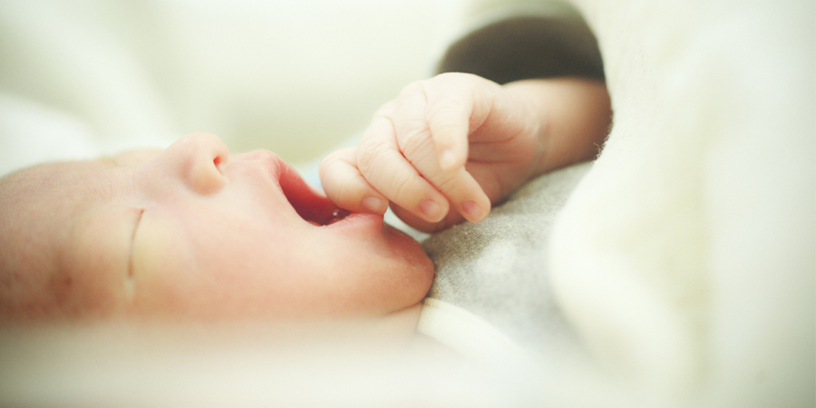

Postpartum Care
産後ケアのご案内
健やかな母と子の成長のために
こにしクリニックでは産後のママと赤ちゃんのフォローアップをしております。
【産後の体調が優れない】【産後手伝ってくれる人がいない】【授乳や育児が不安がある】などお困りの場合は産後ケアをご利用ください。スタッフがお一人お一人に合わせたケアをさせていただきます

当院の産後ケアについて
各市の保健センターと情報共有し、スムーズな受け入れができる様に体制を整えております。産後は心身ともにバランスを崩しやすく、
慣れない育児による精神的な負担、睡眠不足など体調が優れないことも多くあります。そんな時は一人で抱え込まず、ぜひ産後ケアをご利用ください。
・当院の産後ケアは、産後1ヶ月以内の方がご利用可能です。
・原則、当院でご出産された方、または当院で妊娠経過管理中に他院に紹介〜分娩となった方が対象となります。当院で妊娠経過を管理していない場合は受付できないことがございます。
・ご利用ご希望の方は各市の保健センターにご相談いただき、申込をお願いします。＊ページ下部に連絡先があります。
・新居浜市、四国中央市、西条市に住民登録がある方が対象です。
・当院は宿泊型と日帰り型の産後ケアがご利用できます（訪問型は実施しておりません）
・利用日数は宿泊型、日帰り型とも原則7日以内です。（7日以上必要とされる場合は保健センターとご相談ください）
・産後ケアの利用種類、期間はご本人様と保健センター、当院で相談の上決めさせていただきます。入院患者様の人数や、お部屋の使用状況によりご希望に添えない場合がございます。
産後ケアの内容
ご希望に合わせて対応をさせていただきます。休息をご希望の場合は赤ちゃんをナースステーションでお預かりいたします。育児不安や、授乳にお悩みの 場合などはスタッフがヒアリングさせていただき、状態に応じたフォローをさせていただきます。
宿泊型の過ごし方（例：一泊）
10:00〜受付〜入院
＊入院時にスタッフがご希望やご不安なことなどヒアリングさせていただきます。
＊休息目的の場合は、赤ちゃんをお預かりし沐浴を実施します
12:00〜昼食
14:00〜授乳指導、育児指導など（ご希望があれば）
15:00〜ティータイム
18:00〜夕食〜シャワー等
21:00〜夜間はご希望の時間に応じて赤ちゃんをお預かりします
8:00〜朝食
8:30〜赤ちゃんの沐浴
10:00〜退院
利用料金について
産後ケアの利用料金（自己負担額）は各市町村、世帯の課税状況により異なります。下記にあります、各市町村のウェブサイトでご確認ください。
利用形態
ご希望に合わせて、宿泊型、デイケア（日帰り）型を選べます。
宿泊型
10:00~10:00(24時間）/日(3食付き)
日帰り型A
新居浜市10:00~18:00(8時間)/回(1食付き)・西条市10:00~20:00(10時間)/回(2食付き)
日帰り型B
10:00~16:00(6時間)/回(1食付き)
＊四国中央市の方は日帰り型Aが6時間、Bが10時間となります。
＊2025年4月より、新居浜市の日帰りAは8時間になります。
＊お部屋は個室をご用意いたしますが、当日の分娩の状況、入院患者様の数、お部屋の状況によりご希望に添えない場合がございます。
＊産後ケア入院中は原則、外出は出来ません。
＊産後ケア中の面会は可能ですが、感染症の流行時などお断りする場合があります。
＊当院の都合により、急な変更をお願いする場合があります。
準備物
産後ケアご利用時にご準備いただく物について
宿泊型利用時
・パジャマ等衣類
・スリッパ（室内履き）
・ナプキン、生理ショーツ等衛生用品
・洗面、シャワー用品（歯ブラシ、化粧品類、シャンプー、コンディショナー、ボディーソープ、ボディタオル等）
・あかちゃん用品（おしりふき、退院時のお着替え等）＊新生児用おむつは当院より支給します。
・筆記用具
・その他（携帯電話の充電器等、ご自身の必要なもの）
＊必要な場合はクリニックで使用しているアメニティなどの物品を購入することも可能です。ご利用時にご相談ください。
＊フェイスタオル、バスタオル、ドライヤーなどは、お部屋に備え付けの物を使用できます。
日帰り型利用時
・スリッパ（室内履き）
・ナプキン、生理ショーツ等衛生用品
・洗面、シャワー用品（歯ブラシ、化粧品類、シャンプー、コンディショナー、ボディーソープ、ボディタオル等）
＊シャワーをしない場合は必要ありません。
・あかちゃん用品（おしりふき、退院時のお着替え等）＊新生児用おむつは当院より支給します。
・筆記用具
・その他（携帯電話の充電器等、ご自身の必要なもの）
＊必要な場合はクリニックで使用しているアメニティなどの物品を購入することも可能です。ご利用時にご相談ください。
＊フェイスタオル、バスタオル、ドライヤーなどは、お部屋に備え付けの物を使用できます。